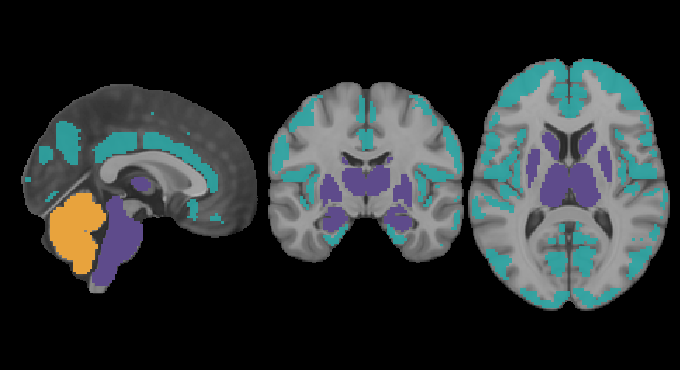

import os
import numpy as np
import matplotlib.pyplot as plt
from matplotlib.colors import ListedColormap
from nilearn import plotting
from nilearn.datasets import load_mni152_template
from nilearn.image import load_img, math_img
### SET BASE_DIR ###
BASE_DIR = '/mnt/moritz'
# --- Paths ---
ATLAS_DIR = os.path.join(BASE_DIR, "CEBRA_project/atlas")
ATLAS1 = os.path.join(ATLAS_DIR, "HarvardOxford-cortl-maxprob-thr50-2mm-without_background.nii.gz")
ATLAS2 = os.path.join(ATLAS_DIR, "HarvardOxford-sub-maxprob-thr50-2mm-only_subcortical_regions.nii.gz")
ATLAS3 = os.path.join(ATLAS_DIR, "atl-Anatom_space-MNI_dseg_resampled_to_MNI.nii")
OUT_DIR = "Figure_1"
OUT_PATH = os.path.join(OUT_DIR, "atlases_overlay_cebra.svg")
os.makedirs(OUT_DIR, exist_ok=True)
# --- Load atlases and binarize (region -> 1, background -> 0) ---
atlas1_bin = math_img("img > 0", img=load_img(ATLAS1))
atlas2_bin = math_img("img > 0", img=load_img(ATLAS2))
atlas3_bin = math_img("img > 0", img=load_img(ATLAS3))
# --- Flat color per atlas ---
cmap_cortical = ListedColormap(["#2CA6A4"]) # teal
cmap_subcortical = ListedColormap(["#5E4B8B"]) # purple
cmap_cerebellar = ListedColormap(["#E8A33D"]) # gold
# --- Plot ---
mni_template = load_mni152_template()
display = plotting.plot_roi(
atlas1_bin,
bg_img=mni_template,
draw_cross=False,
cut_coords=(0, -10, 10),
colorbar=False,
annotate=False,
alpha=0.9,
cmap=cmap_cortical,
)
display.add_overlay(atlas2_bin, cmap=cmap_subcortical)
display.add_overlay(atlas3_bin, cmap=cmap_cerebellar)
# --- Save (transparent, same location as before) ---
display.savefig(OUT_PATH, transparent=True)
print(f"Saved: {OUT_PATH}")
plotting.show()
Saved: Figure_1/atlases_overlay_cebra.svg
